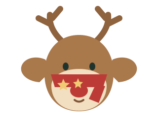

Korvatunturin lentojoukkue
Joulupukin porot
Nämä ystävälliset porot pitävät huolta siitä, että reki kulkee vakaasti läpi jouluyön. Jokaisella on oma suosikkiherkkunsa ja erityinen luonteensa.

| Nimi | Ikä | Väri | Lempiruoka | Erityistaito |
|---|---|---|---|---|
| Petteri | 8 vuotta | Ruskea, punanenäinen | Puolukanvarvut | Näkee sumussa |
| Tähdenlento | 10 vuotta | Vaaleanruskea | Omenalohkot | Lentää tasaisesti |
| Pakkaspilvi | 7 vuotta | Harmaanvalkoinen | Jäkälä | Löytää reitin lumipyryssä |
| Kaneli | 6 vuotta | Kanelinruskea | Porkkanat | Tuntee kaikki tuoksut |
| Lumikide | 9 vuotta | Hopeanharmaa | Mustikanvarvut | Tanssii ilmassa |
| Toivo | 5 vuotta | Tummanruskea | Kuivatut sienet ja kannustaa muita | |
| Revontuli | 6 vuotta | Ruskea | Jäkälä | Taitolentoja |
| Talvikki | 7 vuotta | Porkkanat | Näkee lumipyryssä | |